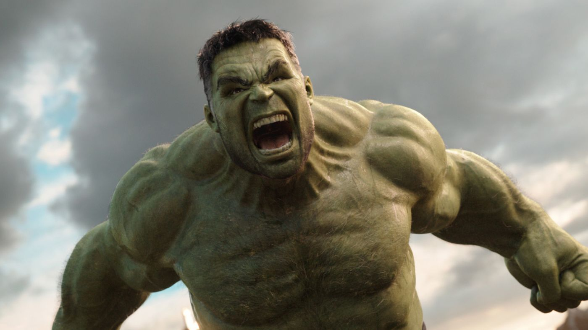

| Photo of Hero's |
Name Hero's |
Some Information |
|
Iron Man or some people say Tony Stark (has a heart) |
Tony Stark has his company,which gifted him by his father. This moovie made a lof of money. It consisted of three part's |
|
Capitan America or some people say Steve Roger's |
Capitan America, i think it's my fauvorite part in Marvel, about boy, who was weak and later he gifted very very great strength |
 |
Wolverine or Logan |
Logan travels to Japan, where he falls in love with the daughter of the head of the Yakuza clan. For the sake of love, Logan will have to confront her father Shingen, brother Samurai, mercenary Viper and other dangerous enemies. |
|
Shan-Ji or owner of ninth circle's |
Shan-Ji, history about a man, who must train since he was a kid, and after he get away from his father. |
|  |
Hulk or Robert Bruce Benner |
Hulk, history about a man, who's gifted a very big opportunitie's and other body from people, he stay big GREEN MONSTER |
|
Tor or God of lighting |
Tor history about a God, from viking's language, you can meet this person in any storie's of vikings, or games about vikings. |
|
Loki or God of lies |
Loki, it's a brother of Tor, and they are so various person.Loki is so able to lie and lead a man by the nose that everyone seriously believed him. |
|
Black Widow or Natasha Romanow |
Black Widow story about two sister's, who's so similar. They are at war with Cuban troops, which forces young children to work for them |